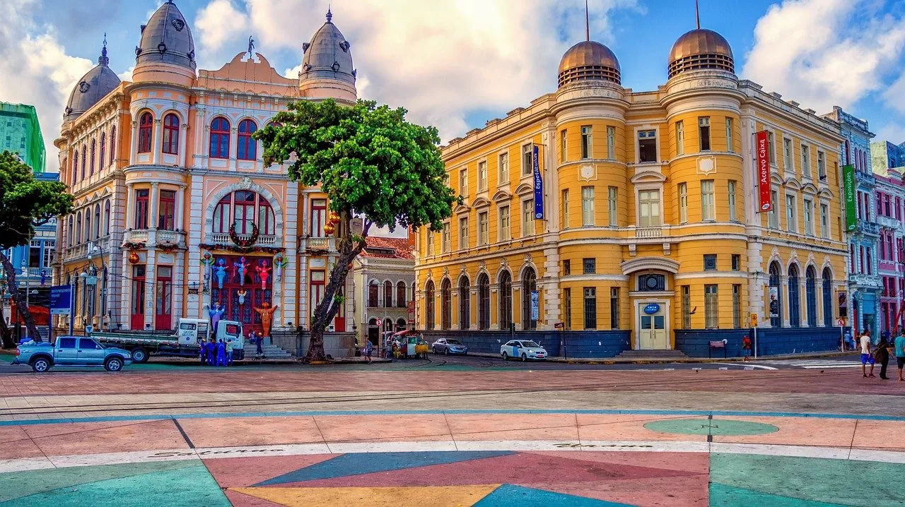
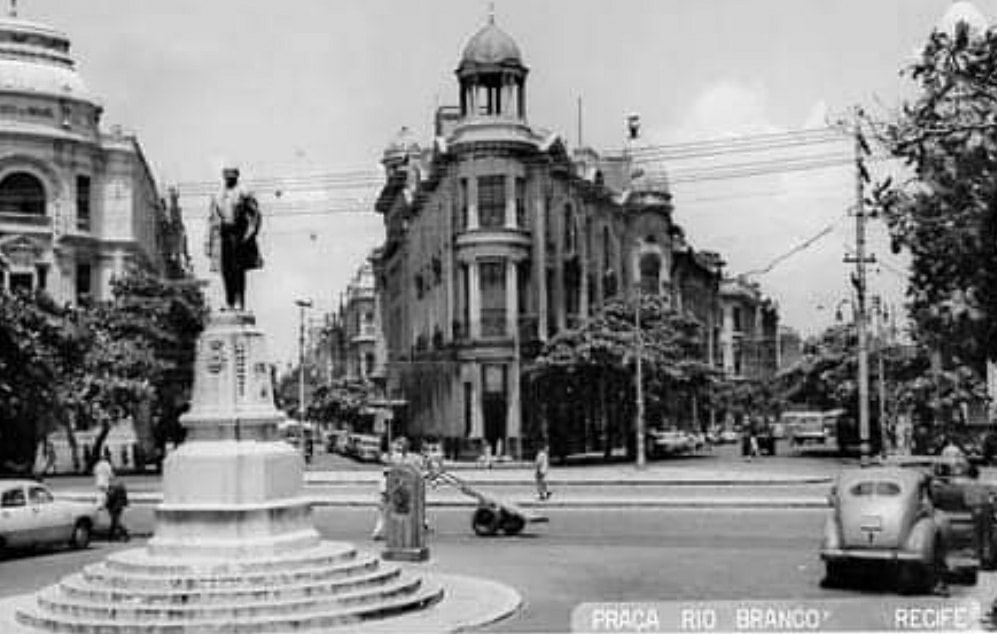

Sobre o Marco Zero
O Marco Zero, situado no Bairro do Recife, é mais do que apenas um ponto geográfico. Ele carrega consigo uma carga histórica que remonta ao século XVI, quando os colonizadores portugueses desembarcaram nessas terras.
A palavra “Marco Zero” tem como significado a referência a partir da qual as distâncias são medidas. Em Recife, esse termo ganha vida em uma praça às margens do Rio Capibaribe. Dessa forma, ao explorar o Marco Zero, é possível perceber a simbologia por trás desse local. Sendo que, ele representa não apenas o ponto inicial da cidade, mas também marca o início da contagem das distâncias entre Recife e outras cidades importantes. Sendo que, a Praça é uma verdadeira encruzilhada de histórias, onde o passado se entrelaça com o presente de forma única. A região ao redor é repleta de charme, com construções antigas e pontes históricas. Sendo assim, uma atmosfera que transporta os visitantes para uma viagem no tempo. É um convite para explorar os recantos da cidade, absorvendo a cultura local e testemunhando a evolução de Recife ao longo dos séculos.
Galeria de Imagens
Abaixo estão algumas fotos deste lugar incrível:
Marco Zero durante o dia.

Marco Zero à noite.
Praça Rio Branco antes do Marco Zero.
Saiba mais
Conheça outros pontos turísticos da cidade de Recife:
Clique aqui e descubra.